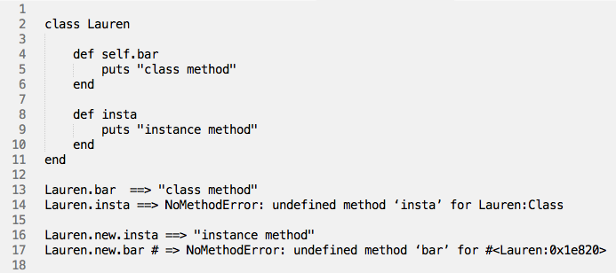

Class Methods vs Instance Methods
May 20, 2014
As you know(or now know!) a Ruby class consists mostly of a collection of method definitions. It stores them foremostly for the purpose of having objects created that are instances of that class. Defining a class lets you group methods into convenient bundles, so that you can quickly create many objects that behave the same way. This is an ideal way to execute one process on a large set of data objects. Instances then, are the objects created by a specific the class, they are instances of that class.
So any method I can call on a class, I can also call on an instance of a class, right? Not quite. Ruby class methods are a tricky subject. Unlike other languages in which there are a greater difference between class methods and instance methods, in Ruby, you won't be able to tell how and where the corresponding method was defined.
You need to remember these things:- Classes are objects.
- Instances of classes are objects.
- A class object has its own methods, it own state, its own identity, It doesn't share these things with instances of itself.
- Instances of class can call methods that are defined as instance methods in their class.
- Instances of Class have access to the instance methods defined in Module
- Or instances can call a singleton method of a class object.
Let me demonstrate:
See the difference? bar is a class method, so calling bar on the Lauren class works fine. insta is an instance method, so calling insta on the Lauren class raises a NoMethodError. Then, on the next couple lines, we call both methods on an instance of Lauren (Lauren.new).
The idea of a class method is that you send a message to the object that is the class rather than to one of the class's instances.
Take Away
Class methods can only be called on classes and instance methods can only be called on an instance of a class.